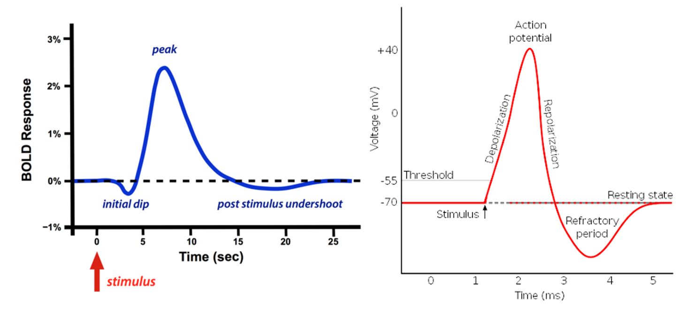
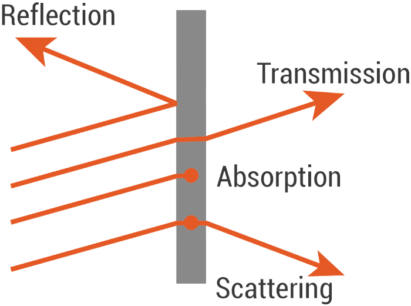
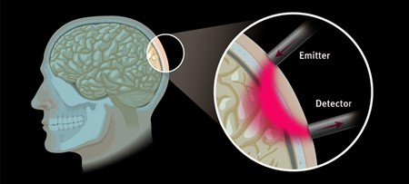

fNIRS are a type of non-invasive brain imaging tool that measures the oxygen levels in your brain to understand your brain activity.
fNIRS stands for functional Near-Infrared Spectroscopy.
It’s similar to a pulse oximeter (the device you see on patients’ fingertips in hospitals sometimes).
An fNIR is just like a pulse oximeter, but for your brain. It uses the optical properties of blood to measure its oxygen levels using optodes.
Advantages of fNIRS
fNIRS are a great technology to measure brain activity because they combine the best parts of EEG and fMRI imaging.
Temporal Resolution
Temporal resolution is the frequency at which the sensors can measure data.
Similar to EEG, fNIRS have a temporal resolution of a few milliseconds, which is much better than fMRIs, which have a resolution of about 1–5 seconds.
Spacial Resolution
Spatial resolution refers to how accurate the data picked up by the sensor is.
The problem with EEG is that it has poor spatial resolution since it picks up on the electrical activity of thousands of neurons in an area.
fNIRS takes after fMRI is this area and has a spatial resolution of about 1 cm.
Sensitivity to Movement
This criterion is where fNIRS outshines all other imaging techniques. If you move when using other brain sensors, it’ll completely mess up the data.
Because of the way fNIRS works, its measurements are much less sensitive to a person’s movement.
Cost
While fNIRS is more expensive that EEG, it’s still significantly cheaper than other techniques like fMRIs and MEGs.
Portability
Unlike fMRIs and MEGs that have users stick their heads into huge machines where they can’t move an inch, fNIRS can be placed directly on a person’s head, similarly to EEG.
Comfort
fNIRS can be put on with comfortable caps that you can move around with. You can even adjust the cap without ruining any measurements. It’s the most comfortable brain imaging technique.
Disadvantages
Signal Depth
One problem with fNIRS its measurement depth. Since it uses an optical-based measurement, it can only see so far into the brain.
Unlike EEG and fMRI that can analyze the whole brain, fNIRS can only measure data about 1.5cm deep into your brain.
How fNIRS Works
As your neurons fire, they need to use resources to sustain themselves. One of those resources is oxygen.
Your blood replenished the oxygen in your brain by carrying it there using a protein called hemoglobin (fun fact: its what makes your blood red).
So you can imagine that when a part of your brain is working relatively hard, it uses an increased amount of oxygen, just like you would if you went for a run.
When your neurons work harder, they activate something called a BOLD (Blood Oxygen Level Dependent) response.
If you’re familiar with EEG, this is kind of like the action potential your neurons fire.
Even the graph looks the same:

BOLD reponse (left) and Action Potential (right).
fNIRS can detect these responses by measuring the oxygen levels of the hemoglobin in your blood.
· · ·
If you’ve taken high school optics, you may remember that every material has its own optical property.
This fact is what NIRS technology relies on.

Fun fact: Everything has a certain colour because it absorbs specific wavelengths of light. The ones that are reflected are the ones you see.
fNIRS use infrared light because it transmits well through your skin and bone but behaves differently in response to Hb (hemoglobin) and HbO (oxygenated hemoglobin).
NIRS sensors use light wavelengths between 700–900nm because that range penetrated the skin and bone while also creating
a differentiable response between Hb and HbO.
An fNIR sensor has two components: an emitter and a detector. Each pair of these makes up one channel.
So you can actually have two emitters and a detector to create two channels.
When the emitter projects infrared red light, it scatters around and then eventually comes back out.

The way the light scatters depends on the materials that make up the part of the brain where the light scatters. In this
case, that’s partially Hb and HbO.
The detector can measure the intensity of infrared light coming out of the brain and compare it to the intensity that
the emitter projected into the brain to measure the oxygenation level of your hemoglobin.
The relationship between these intensities of light can be modelled using Beer-Lambert’s Law.
You can control how deep you’re measuring into the brain by changing the spacing between the emitter and detector pairs.
The farther apart they are, the deeper the measurement.
Usually, the pairs are about 3 cm apart, which measures about 1.5 cm deep into the brain.
The problem is that the deeper your measurement, the longer the path that the light has to take. This creates more
opportunity for the light to scatter and get absorbed, which hurts the signal quality.
If you kept moving the two further apart, eventually, no light would return to the detector.
· · ·
While fNIRS aren’t as popular as other imaging techniques, many companies are beginning to recognize its benefits and are starting to implement them in their products.